A1
Do this. Sign in to the RackTrack app as a technician and open Scan.
You should see. The space you are standing in can be chosen before the photo. There is no Approvals entry for a technician.
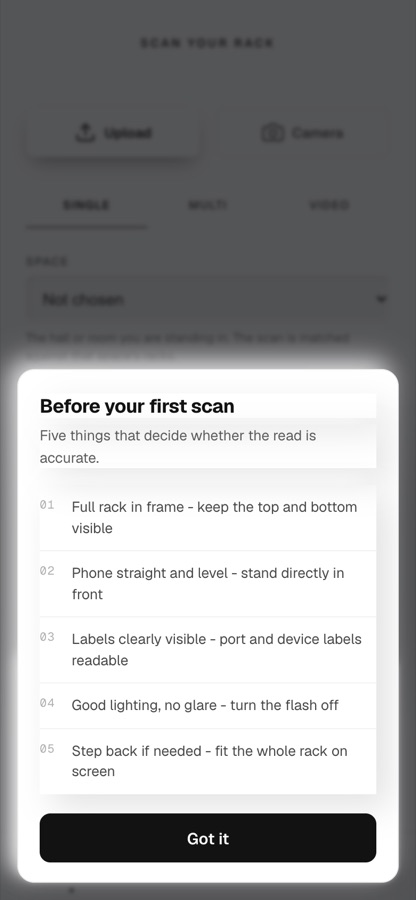
RackTrack · test sheet · 18 September 2026
Thirty-eight things to try, in the order a real day would go. Each one says what to do, what should happen, and shows the screen it happens on. Tick them off as you go. If a screen does not match its picture, say the number.
| Where | Sign in as | Password | What they are |
|---|---|---|---|
| demo.racktrack.ai | meridian.admin | Setup@2026! | Organization admin: triages, assigns, decides, writes |
| demo.racktrack.ai | meridian.approver | Setup@2026! | Approver: approves and rejects, nothing else |
| demo.racktrack.ai | meridian.tech | Setup@2026! | Technician: scans and sends, nothing else |
| demo.racktrack.ai/approvals | the same accounts | the same | RackTrack Approvals, where the deciding happens |
owner account to test the workflow: a check belongs to an organization and the owner is in none, so it will look broken when it is behaving correctly. And if any page ever stops, reload it once; the app fetches itself again after an update lands while a page is open.What the person at the rack can and cannot do.
Do this. Sign in to the RackTrack app as a technician and open Scan.
You should see. The space you are standing in can be chosen before the photo. There is no Approvals entry for a technician.

Do this. Open a scanned rack, then Report, then Drift vs NetBox.
You should see. It says how many things do not match and how many supporting records would be created on their own. It names who the check will go to, or says the admin will choose. One button: Send to the admin.
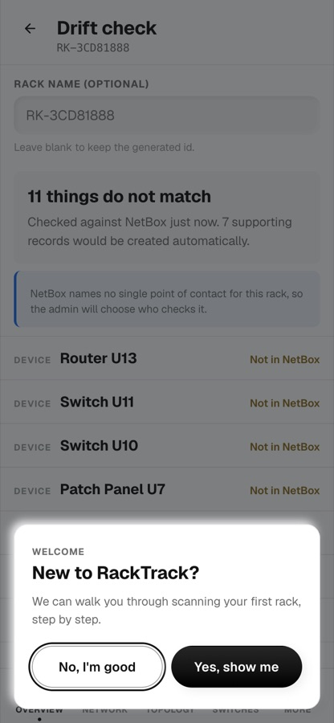
Do this. Scroll the list of differences.
You should see. One line per difference in plain words, for example "Not in NetBox". Ports are not listed on their own; they belong to their device.

Do this. Press Send to the admin.
You should see. It says it has gone, and a "Track this check" link appears. Nothing on this screen approves, assigns or writes.
Do this. As a technician, look for anything that decides.
You should see. There is none. Approve, assign and write are not on this screen, and the server refuses them to a technician even if the address is typed by hand.
Do this. Sign in as a brand new organization admin.
You should see. The setup opens by itself, one step at a time, Back and Next only. A red star marks what must be filled. Nothing else is marked.

From the check arriving to the record being written. This is the main test.
Do this. Sign in as meridian.admin and open Approvals.
You should see. The dashboard opens. The checks are grouped by their clock: on track, at risk, breached, paused. Every number is clickable.

Do this. Click one of the numbers.
You should see. The list opens already filtered to exactly those checks. The count on the tile and the number of rows agree.
Do this. Open a check that a technician has sent.
You should see. The header shows the rack, the datacentre, the status, the priority and the risk. The differences are listed with what the record holds against what the scan saw. Ports are folded under their device, so a rack of nine switches asks nine questions, not hundreds.

Do this. Try to Assign before you have triaged.
You should see. It is refused in plain words beside the action: triage the drift first. Not a red error, not a blank page.
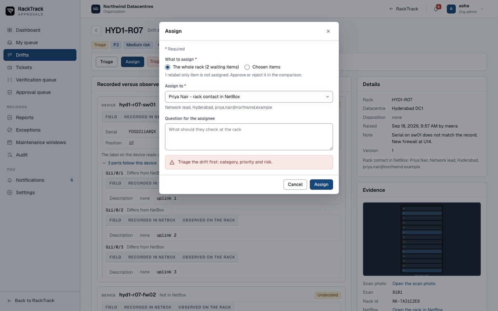
Do this. Triage it: category, priority, risk, and a note.
You should see. The header takes the priority and risk you chose. The clocks start from here.

Do this. Use Assign, and choose the whole rack.
You should see. One work ticket per device, not per port. The contact NetBox names for the rack is offered first. A ServiceNow incident is raised for each and the person is emailed.

Do this. Find an item marked as moved in NetBox, a rebind, and look at its buttons.
You should see. It offers Approve and Reject directly and never Assign. A rebind only re-labels a record NetBox already holds, so there is nothing to check at the rack.
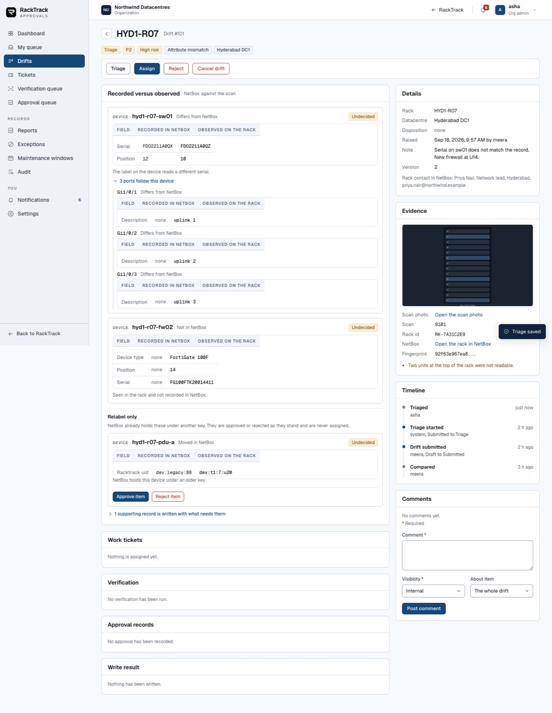
Do this. On an ordinary item that has not been assigned, try Approve.
You should see. Refused beside that item: assign it to someone first. Approve and reject open once their ticket is resolved.
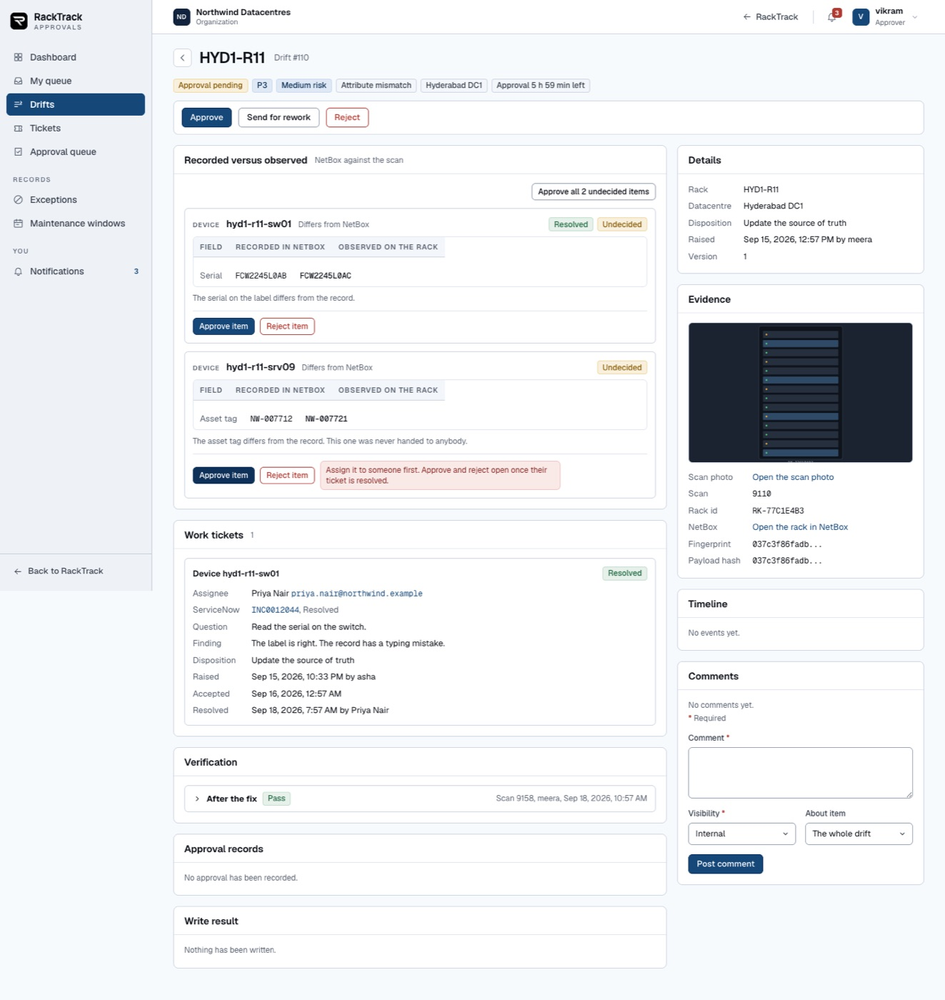
Do this. Accept a ticket, start it, then resolve it with a finding.
You should see. The finding is mandatory. The item comes back to the admin undecided, carrying what the person found. A resolved ticket is not an approval.

Do this. Try to approve before anything has been verified.
You should see. The plan will not move to approval until a verification is recorded: either a second scan compared with the plan, or an admin recording that it was checked in person, with a reason that is written into the history.
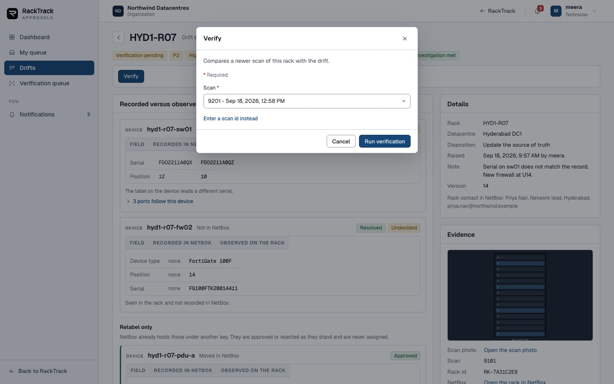
Do this. Decide each device.
You should see. Nine decisions for a rack with hundreds of differences. Each decision records who made it and when.
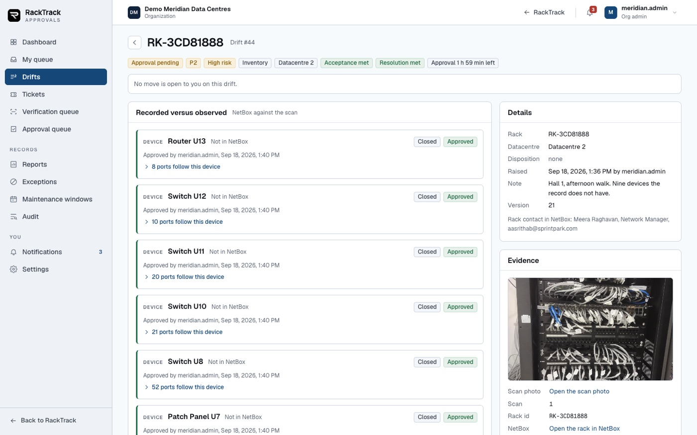
Do this. Try to reject something without saying why.
You should see. Refused. A rejection needs a reason code from the list and a comment.
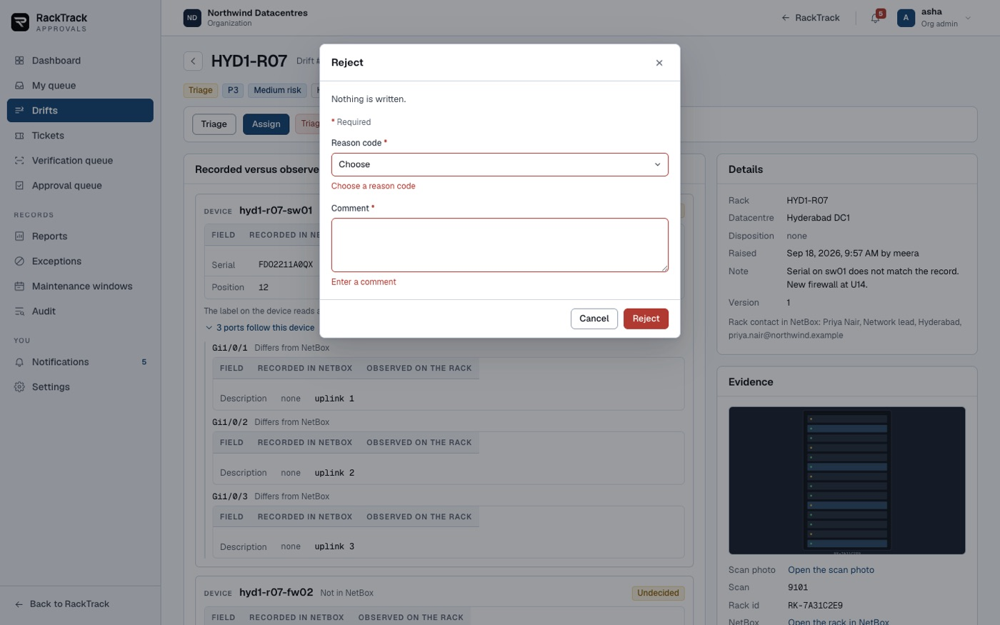
Do this. As the same admin who resolved the tickets, try to approve.
You should see. Refused: you resolved a ticket on this plan, so somebody else has to make this decision. This is the rule the whole workflow rests on.

Do this. Sign in as meridian.approver and open the same check.
You should see. They can approve and reject. They cannot triage, assign or write. Their queue shows what is waiting for them.

Do this. Approve it.
You should see. The approval is recorded against the hash of exactly what was approved and the version of the plan. Change the plan afterwards and the approval no longer counts.

Do this. On a check whose risk is critical, try to approve twice as the same person.
You should see. Refused. A critical risk needs a second approver, and it has to be a different person.
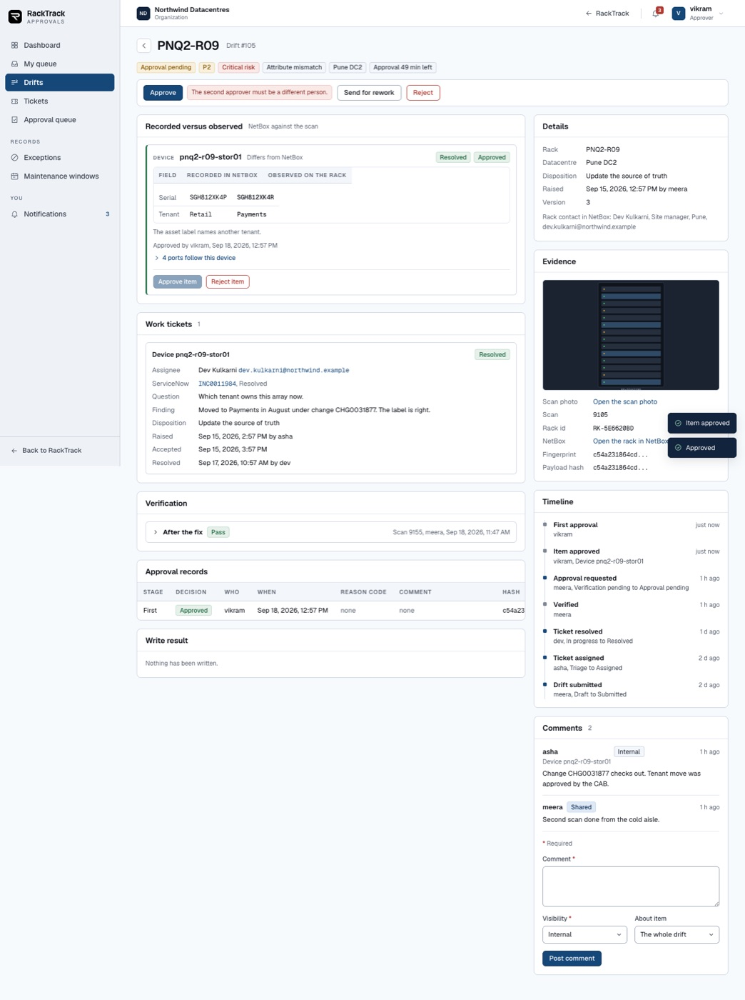
Do this. As the approver, try to write.
You should see. Refused: an admin approves and writes. The approver decides; they do not touch the record.
Do this. As the admin, write it to NetBox.
You should see. Only the approved items go. NetBox is compared once more first, so nothing is written if the record moved. The page follows the write while it runs.
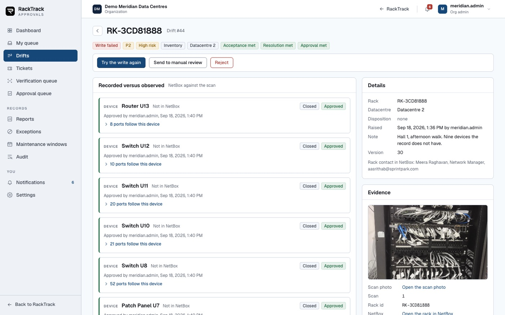
Do this. Look at a write that did not finish.
You should see. It says "write failed" rather than pretending. Every object NetBox refused is named with its reason, beside what did go in. "Try the write again" writes only the rest, under the same approval.

Do this. Open a rack that already has an unfinished check.
You should see. It links you to the open check instead of quietly making a second one. Comparing again is a button you press on purpose, never something that happens because a page opened.
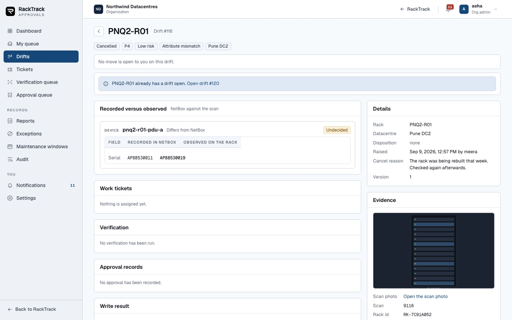
What an operations team uses day to day.
Do this. Open Drifts and use the search and the filters.
You should see. Search by rack, check or person. Filter by status, datacentre, rack, priority, risk, assignee and clock. Sort by any column.
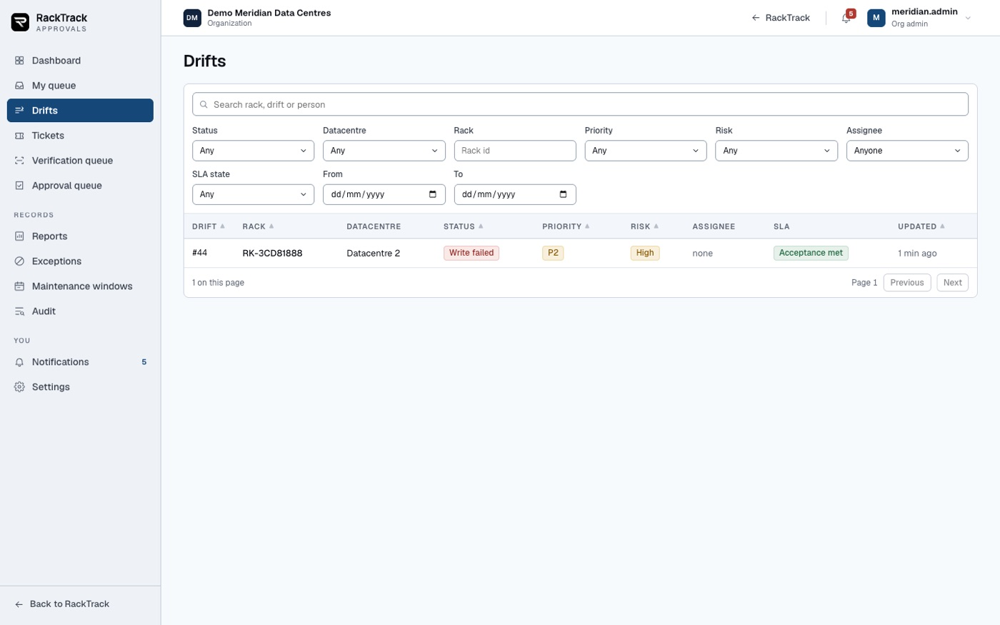
Do this. Open Tickets.
You should see. Every work ticket with the person it went to, their email, its state, the ServiceNow number and the finding.

Do this. Open Reports and click a number.
You should see. Eight reports: backlog, clocks, quality, trends, resolvers, approvals, writes, exceptions. Every number opens the records behind it, and each report has a CSV beside it.
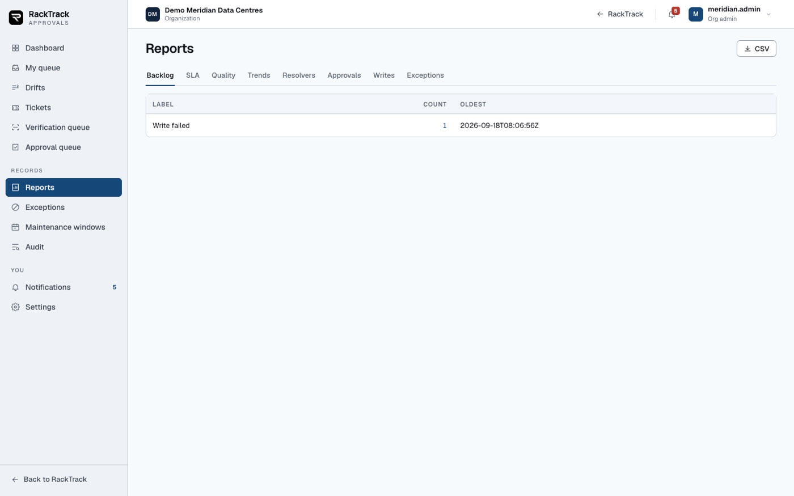
Do this. Add an exception for a difference you have decided to keep.
You should see. It needs an owner, a justification and an expiry. Matching items stop being raised until it expires or is revoked.

Do this. Open Notifications and the preferences.
You should see. The bell counts what is unread. A person can turn channels off, except the three that always go out: a failed write, a breached clock and an escalation.
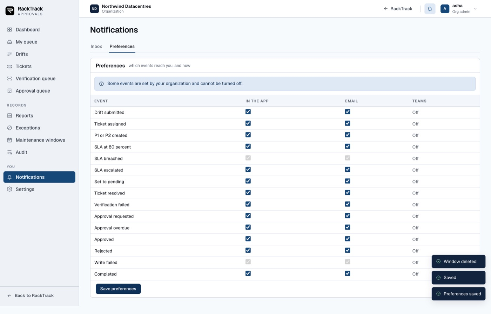
Do this. Open Settings as the organization admin.
You should see. The clock targets per priority, the working calendar, which risks need a second approver, and when things escalate. All of it is per organization, not fixed in the product.
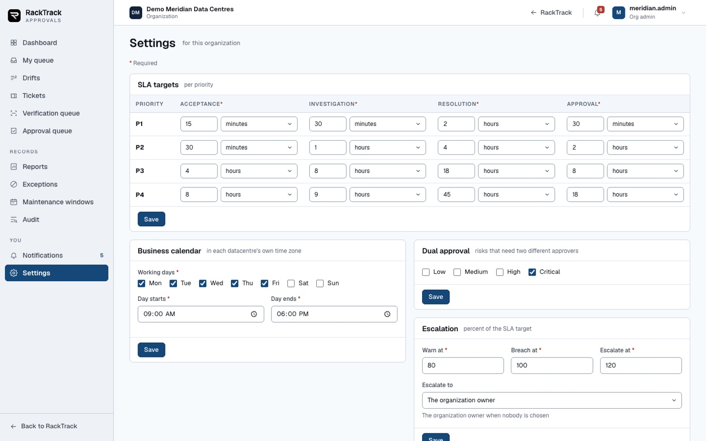
Do this. Open the audit view.
You should see. Every move across every check, with who did it and when, read only.

An admin approving from a corridor.
Do this. Open Approvals on a phone browser.
You should see. Everything works at phone width. Nothing runs off the edge; tables scroll inside themselves.

Do this. Open a check on the phone.
You should see. The same information and the same buttons, in one column.
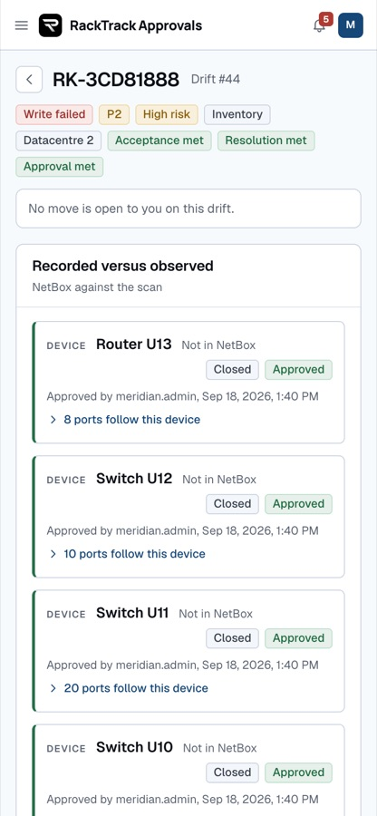
Try to break it. Each of these must say no.
Do this. Sign in as the owner account and open Approvals.
You should see. The owner sees only checks it raised itself, because a check belongs to an organization and the owner is in none. Do not use this account to demonstrate the workflow.
Do this. Sign in as an admin of a different organization and try to open a check by its address.
You should see. Not found. A check belongs to one organization and nobody outside it can list or open it, including the platform owner.
Do this. Leave a page open, have somebody deploy, then click something.
You should see. The page fetches itself once and carries on. If a real fault follows, it stops and shows the message with Reload the page beside Go to Home.
Say so if you see these; no need to write them up.
The same workflow with every step in order, if you want the story rather than the checklist: the walkthrough page. Anything that does not match, give the number from this sheet and what you saw instead.